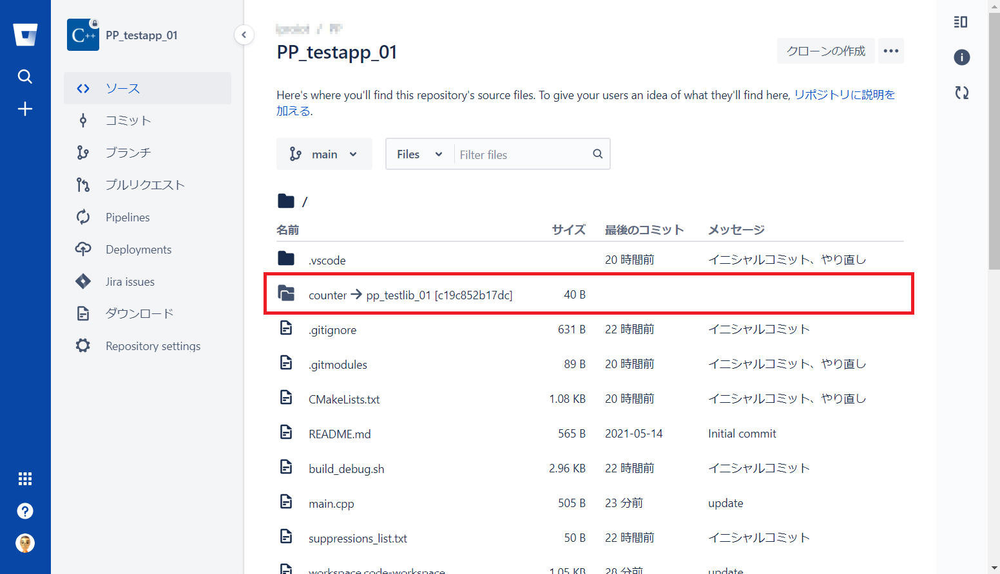

git submodule コマンドの使い方を整理します。
submoduleは.gitmodulesで管理されている。
$ git submodule add https://example.com/sub-modules # .gitmodules ファイルが更新される
$ git commit -a # 変更を保存（必須！）
上記の場合、追加するリポジトリ名がフォルダ名になります。
自身が指定するフォルダ名で追加する場合は以下のように行います。
$ git submodule add https://example.com/sub-modules [folder-name] # .gitmodules ファイルが更新される
$ git commit -a # 変更を保存（必須！）(ex) git submodule add git@bitbucket.org:iproiot/pp_testlib_01.git counter
submoduleはupdateコマンドで更新しなければならない。
--recursive オプションをつけてください。
git clone https://example.com/repo-with-sub-modules --recursive
すると、サブモジュールのファイルも自動で取得されます。
--recursive をつけ忘れた / サブモジュールのファイルを取得したい
git clone に --recursive を付けないとサブモジュールのファイルが取得されませんが、git submodule update --init で後からチェックアウトできます。
git submodule update --init
新しいバージョンを "git checkout" したら、他の人がサブモジュールを追加していた。
git submodule update --init でサブモジュールのファイルを取得しましょう。
submodule削除するときはファイルを消すだけではダメ。
サブモジュールの情報が複数の場所に保存されているので多少複雑です。
$ git submodule deinit -f sub-module # 登録解除 $ git rm -f sub-module # ファイルを削除 $ git config -f .gitmodules --remove-section submodule.sub-module # 設定ファイルから削除 $ git commit -a # 変更を保存（必須！）
“git submodule“ を実際に使用してみる簡単な例を以下に記載します。c++のプログラムを例に作成してみます。
チュートリアルのためのテスト用として2つのリポジトリを作成します。
(1) PP_testapp_01 ： プログラム本体用。
(2) PP_testlib_01 ： 共有ライブラリ用。PP_testapp_01 で使用します。
ライブラリ側（PP_testlib_01）として動的ライブラリ（libcounter.so）を作成してみます。
$ git clone git@bitbucket.org:iproiot/pp_testlib_01.git
vscode で作成した例です。プログラム詳細の説明は割愛します。
counter.h は以下の通りです。
#ifndef COUNTER_H
#define COUNTER_H
#include <iostream>
#include <stdexcept>
namespace counter{
// prototype giving.
class counter{
private:
size_t _count;
public:
counter(); // default constructor
explicit counter(size_t init_count);
virtual ~counter(); // destructor
counter(const counter&) = default; // copy constructor
counter& operator = (const counter&) = default; // copy operator
counter(counter&&) = default; // move constructor
counter& operator = (counter&&) = default; // move operator
void increment();
void decrement();
void set_count(size_t new_count);
size_t get_count();
//constexpr static size_t MaxCount = 10000; // (a) c++11 以降
const static size_t MaxCount; // (b) c++11 以前
//constexpr static size_t DefaultCount = 0; // (a) c++11 以降
const static size_t DefaultCount; // (b) c++11 以前
};
}
#endif
counter.cpp は以下の通りです。
#include "counter.h"
namespace counter{
/**
* @brief Construct a new counter::counter object
* カウント値は DefaultCount で初期化される。
*/
counter::counter()
: counter(DefaultCount)
{
}
/**
* @brief Construct a new counter::counter object
* @param init_count カウント値の初期値
*/
counter::counter(size_t init_count)
: _count(init_count)
{
if (_count > MaxCount){
_count = DefaultCount;
}
}
/**
* @brief Destroy the counter::counter object
*
*/
counter::~counter()
{}
/**
* @brief 値を１増やす
* @exception std::overflow_error incrementした結果が MaxCount を超える場合に throw する。_count 値は前状態を維持する。
*/
void counter::increment()
{
if ( _count < MaxCount ){
_count++;
}
else{
throw std::overflow_error("The counter value has exceeded the maximum value.");
}
}
/**
* @brief 値を１減らす
* @exception std::underflow_error decrementした結果が 0 を下回る場合に throw する。_count 値は前状態を維持する。
*/
void counter::decrement()
{
if ( _count > 0 ){
_count--;
}
else{
throw std::underflow_error("The counter value is below the minimum value.");
}
}
/**
* @brief 値を _count に設定する
* @param new_count 新しい値
*/
void counter::set_count(size_t new_count)
{
if ( new_count <= MaxCount ){
_count = new_count;
}
else{
throw std::overflow_error("The counter value has exceeded the maximum value.");
}
}
/**
* @brief 現在の値（_count）を取得する
* @return size_t 現在のカウント値
*/
size_t counter::get_count()
{
return _count;
}
/**
* @brief 最大カウント値
*/
const size_t counter::MaxCount = 10000; // (b) c++11 以前
/**
* @brief デフォルトカウント値
*/
const size_t counter::DefaultCount = 0; // (b) c++11 以前
}
このサンプルプログラムでは cmake を使ってビルドしています。
”CMakeLists.txt” の内容は以下の通りです。（可読性を優先して余分な処理を削除しています。）
# このバージョン以上のCMAKEを使うよう宣言
cmake_minimum_required(VERSION 3.10)
# プロジェクト名．C++言語であることを宣言
project(counter CXX)
# 共通オプション
set(CMAKE_EXE_LINKER_FLAGS "${CMAKE_EXE_LINKER_FLAGS}")
# ビルドの種類によってオプションを変える
set(CMAKE_CXX_FLAGS_DEBUG "-Wall -O0 -g")
set(CMAKE_CXX_FLAGS_RELEASE "-Wall -O3 -DNDEBUG")
set(CMAKE_CXX_FLAGS_MINSIZEREL "-Wall -Os -DNDEBUG")
set(CMAKE_CXX_FLAGS_RELWITHDEBINFO "-Wall -O2 -g -DNDEBUG")
message(STATUS "CMAKE_CXX_FLAGS = ${CMAKE_CXX_FLAGS}")
# ライブラリの作成を指示．SHARED で共有ライブラリ．
# counter.cpp を元に、libcounter.so という名前で作成．
add_library(counter SHARED counter.cpp)
# counter ライブラリのインクルードディレクトリを教えてあげる
# PROJECT_SOURCE_DIRはこのプロジェクトのルートディレクトリの絶対パス
target_include_directories(counter
PUBLIC ${PROJECT_SOURCE_DIR}
)
メインアプリ（PP_testapp_01）を作成します。
$ git clone git@bitbucket.org:iproiot/pp_testapp_01.git $ cd pp_testapp_01
$ git submodule add git@bitbucket.org:iproiot/pp_testlib_01.git counter $ git commit -a
.gitmodules” は以下のような記載となっていました。
counter が submodule として登録されていることを確認できます。
vscode で作成した例です。
下図では counter ライブラリが “git submodule add” で登録した対象です。
”S” という表示は
Submodule の ”S” と思われます。ここに修正がある場合は ”M” (Modify ？) を表示しました。
main.cpp の内容は以下の通りです。
#include <iostream>
#include <memory>
#include "counter.h"
int main( int argc, char*argv[])
{
// counter
{
std::cout << "\n=== counter ===\n";
counter::counter counter;
std::cout << "counter = " << counter.get_count() << std::endl;
counter.increment();
std::cout << "counter = " << counter.get_count() << std::endl;
counter.increment();
std::cout << "counter = " << counter.get_count() << std::endl;
}
return EXIT_SUCCESS;
}
このサンプルプログラムでは cmake を使ってビルドしています。
”CMakeLists.txt” の内容は以下の通りです。ここで submodule である counter を指定しています。（可読性を優先して余分な処理を削除しています。）
cmake_minimum_required(VERSION 3.10)
project(main CXX)
# c++17 が必要
set(CMAKE_CXX_STANDARD 17)
# 非対応ならエラーにする
set(CMAKE_CXX_STANDARD_REQUIRED ON)
# デバッグ出力
message(STATUS "PROJECT_SOURCE_DIR = ${PROJECT_SOURCE_DIR}")
message(STATUS "PROJECT_BINARY_DIR = ${PROJECT_BINARY_DIR}")
message(STATUS "CMAKE_CXX_STANDARD = ${CMAKE_CXX_STANDARD}")
# ビルドの種類によってオプションを変える
set(CMAKE_CXX_FLAGS_DEBUG "-Wall -O0 -g")
set(CMAKE_CXX_FLAGS_RELEASE "-Wall -O3 -DNDEBUG")
set(CMAKE_CXX_FLAGS_MINSIZEREL "-Wall -Os -DNDEBUG")
set(CMAKE_CXX_FLAGS_RELWITHDEBINFO "-Wall -O2 -g -DNDEBUG")
# サブディレクトリを指定。指定したディレクトリ内のCMakeLists.txt が実行される。
add_subdirectory(counter)
# main.out という実行ファイルを main.cpp から作成
add_executable(main.out main.cpp)
# main.outをコンパイルする際に counter をリンクする
target_link_libraries(main.out counter)
同じく vscode の「ソース管理」画面です。
vscode では submodule (counter) はアプリ本体と別の管理対象として扱われていることがわかります。
Commit, Push 後の状態をブラウザ画面で確認すると、submodule は下図のように表示されました。
counter が
pp_testlib_01 [c1c852b17dc] へリンクしていることがわかります。

cmake のお作法に従って、以下の通り入力します。
$ mkdir build $ cd build $ cmake .. $ make $ ./main.out
ビルドを成功してプログラムもちゃんと動作できました。submodule 内のプログラムをちゃんと使用できています。
ライブラリ側（PP_testlib_01）を単独で修正してコミット、プッシュ後、アプリ本体側（PP_testapp_01）がどうなるかを確認してみます。合わせてアプリ側（PP_testapp_01）へこの修正を取り込む手順などを確認します。
ここでは README.md を変更してみました。
PP_testlib_01 の修正をコミット／プッシュします。詳細は割愛。
画面上で submodule の変更を確認できるところはありません。
git status コマンドで状態を確認した結果は以下の通りです。
| PP_testapp_01 フォルダ | it status したところ、 ”nothing to commit, working tree clean.”（変更なし） と出力されました。 |
| PP_testlib_01 フォルダ | cd counter 後に git status したところ、下図のように ”このブランチは ‘origin/main’ に比べて1コミット遅れています。” と出力されました。 |
「ソース管理」の画面を確認すると、以下のようになっていました。変更が発生していることをここで確認するのが良さそうです。
これで counter（submodule）を最新状態にできます。
すると、以下のような状態になりました。
アプリ側（PP_testapp_01）として変更が生じたという扱いになります。
［ソース管理］画面で確認すると、counter のリンク先が変更になった、という扱いのようです。
アプリ側をコミット／プッシュします。詳細の記載は割愛します。
以上でライブラリ側変更の取り込みを完了です。
以上のコミット結果を別フォルダへ “git clone“ してみます。
せっかくなので、”--recursive” オプションありの git clone と、”--recursive” オプション無しの git clone をそれぞれ行って比べてみます。
始めに “--recursive“ 付きの git clone を試してみます。
ここでは下記のようにコマンドを入力しました。
$ git clone git@bitbucket.org:iproiot/pp_testapp_01.git --recursive test1
クローン下フォルダを vscode で開いた結果を下図に示します。
予定通り submodule のフォルダ counter
と中身を含んでクローンされました。特記事項ありません。
次に “--recursive“ 無しの git clone を試してみます。ここでは下記のようにコマンドを入力しました。
$ git clone git@bitbucket.org:iproiot/pp_testapp_01.git test2
クローン下フォルダを vscode で開いた結果を下図に示します。こちらは counter の中身が空でクローンされました。実験の意図通りです。
ここで “--recursive“ をつけ忘れたことに気づいた、または他の人が submodule を追加したことに気づいた、ということにします。下記コマンドを入力して、サブモジュールのファイルを取得しましょう。
$ git submodule update --init
下図の通りちゃんと counter フォルダ内のファイルを取得することができました。
以上です。
本ページの情報は、特記無い限り下記 MIT ライセンスで提供されます。
|
The MIT License (MIT) Copyright © 2021 Kinoshita Hidetoshi Permission is hereby granted, free of charge, to any person obtaining a copy of this software and associated documentation files (the "Software"), to deal in the Software without restriction, including without limitation the rights to use, copy, modify, merge, publish, distribute, sublicense, and/or sell copies of the Software, and to permit persons to whom the Software is furnished to do so, subject to the following conditions: The above copyright notice and this permission notice shall be included in all copies or substantial portions of the Software. THE SOFTWARE IS PROVIDED "AS IS", WITHOUT WARRANTY OF ANY KIND, EXPRESS OR IMPLIED, INCLUDING BUT NOT LIMITED TO THE WARRANTIES OF MERCHANTABILITY, FITNESS FOR A PARTICULAR PURPOSE AND NONINFRINGEMENT. IN NO EVENT SHALL THE AUTHORS OR COPYRIGHT HOLDERS BE LIABLE FOR ANY CLAIM, DAMAGES OR OTHER LIABILITY, WHETHER IN AN ACTION OF CONTRACT, TORT OR OTHERWISE, ARISING FROM, OUT OF OR IN CONNECTION WITH THE SOFTWARE OR THE USE OR OTHER DEALINGS IN THE SOFTWARE. |
| 2021-08-28 | - | submodule を単独ページに分離 |
| 2021-04-04 | - | 新規作成 |